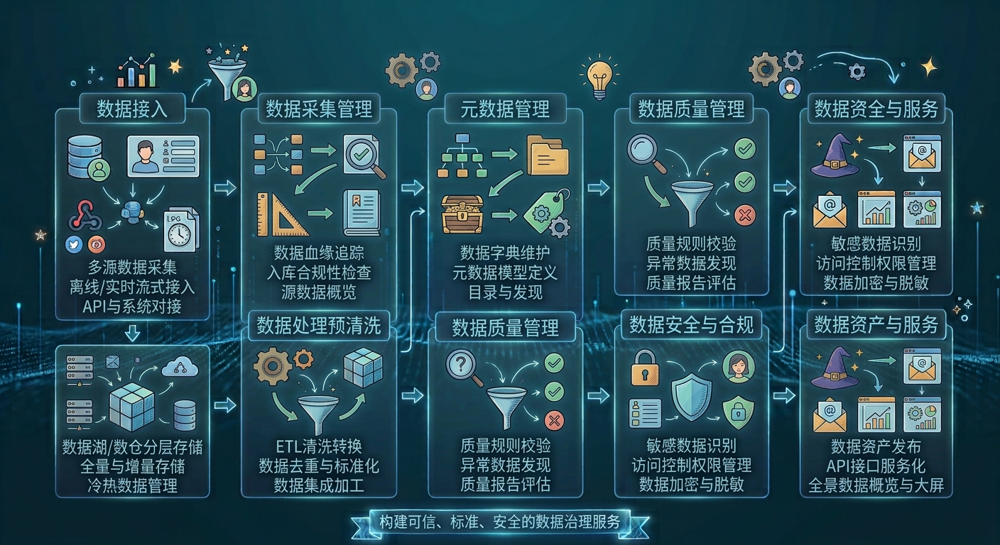
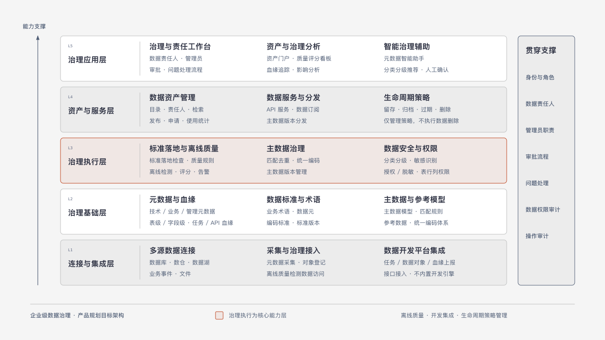
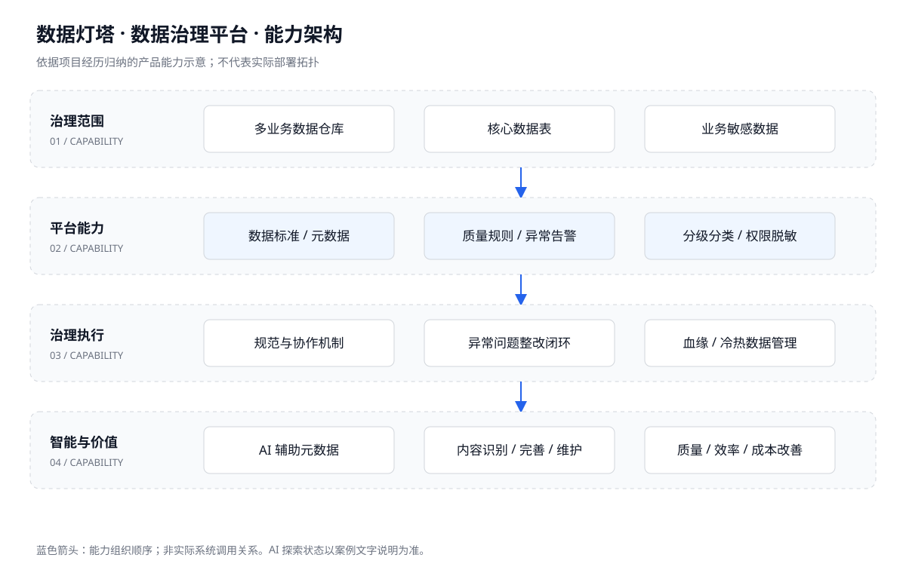

平台与机制同时建设
规划治理平台并建设团队协作机制，推动规范在多业务团队执行。
 WANG.
WANG.01 / 项目名称与简介
让数据可信，让智能应用有根基。
面向标准不统一、质量问题和元数据维护成本，规划并落地数据标准、元数据、数据质量与安全体系，同时探索 AI 辅助元数据管理。
02 / 痛点介绍
03 / 价值与职责
以统一标准、元数据、质量和安全能力提升数据可用性，通过治理机制推进多业务执行，并以 AI 辅助元数据维护。
担任平台负责人，负责产品规划、方案设计及落地推进。具体职责涵盖下文关键动作，并协同相关业务和技术团队实施。
04 / 产品流程图

05 / 信息架构图

06 / 关键动作
规划治理平台并建设团队协作机制，推动规范在多业务团队执行。
建设离线质量监控、规则配置、告警和整改闭环。
引入 AI 辅助元数据识别、完善与维护，提升效率和内容质量。
结合分级分类、权限脱敏、血缘及冷热数据管理推进治理。
07 / 视频（图片）简介

点击图片查看完整能力图，辅助理解项目覆盖的能力范围。
尚未提供实际产品截图或演示视频。本图为项目资料归纳，不是系统截图；后续可替换为脱敏截图或演示视频。